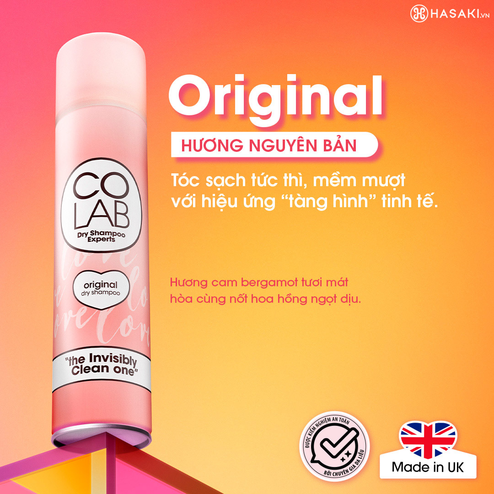
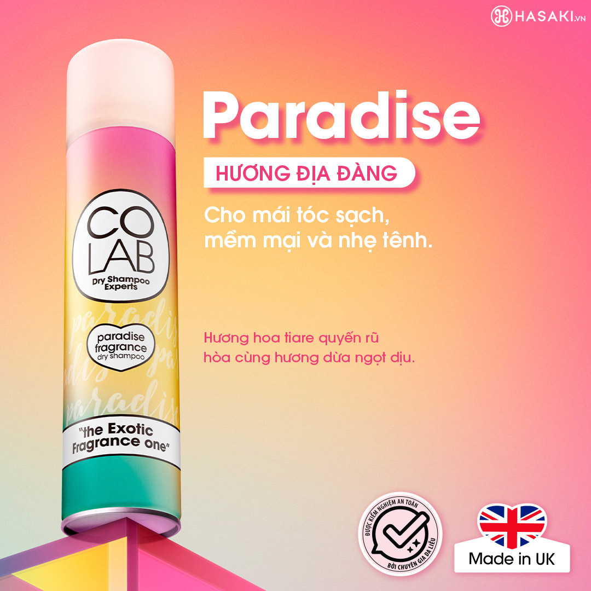
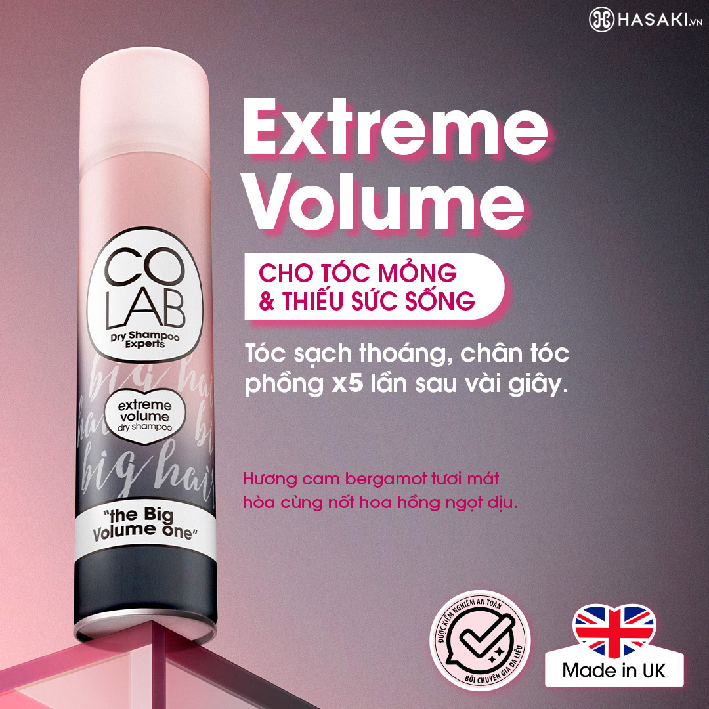
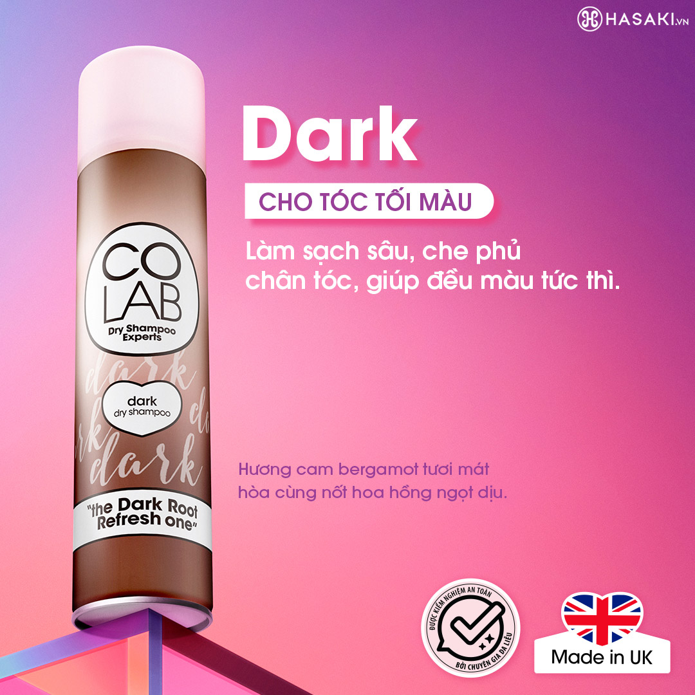

Combo Dầu Gội Khô Colab Extreme Volume Làm Phồng Tóc 200ml + Tropical Hương Nhiệt Đới 200ml
189.000 ₫ (Đã bao gồm VAT)
Giá thị trường: 410.000 ₫ - Tiết kiệm: 221.000 ₫ (54%)
Mùi hương:
Extreme Volume + Tropical
Dung tích: 220ml x 2
Bạn muốn nhận hàng trước 16h hôm nay (Miễn phí). Đặt hàng trong 30 phút tới và chọn giao hàng 2H ở bước thanh toán.
Mô tả sản phẩm
Dầu Gội Khô Colab Dry Shampoo Experts là sản phẩm dầu gội khô đến từ thương hiệu chăm sóc tóc Colab nổi tiếng của Anh, có công dụng thấm hút dầu thừa trên tóc vô cùng hiệu quả mà không để lại vệt trắng, cho mái tóc bồng bềnh, tràn đầy sức sống.
Colab là thương hiệu thuần chay, hoàn toàn không thử nghiệm trên động vật và đã từng đạt được giải thưởng Best Dry Shampoo của Cosmopolitan UK Beauty Awards.
- Bộ gồm: Dầu gội 440ml + Dầu xả 440ml
-
Original: Hương Nguyên Bản - Hương Cam Bergamot và Hoa Hồng

-
Paradise: Hương Địa Đàng - Hương Hoa Tiare và Dừa

-
Extreme Volume: Làm Phồng Tóc

-
Dark: Phủ Bạc Chân Tóc

- Sản phẩm thích hợp cho mọi loại tóc.
- Tóc dễ tiết dầu thừa, dễ bết dính.
- Khử mùi hôi bám trên tóc và để lại hương thơm lưu lâu trên tóc, nhiều lựa chọn mùi hấp dẫn.
- Công nghệ đặc biệt tạo ra tia phun không trọng lượng.
- Propellant giúp phân tán đều các sản phẩm lên tóc thành các hạt nhỏ.
- Các hạt bột siêu mịn giúp hút dầu và bã nhờn trên da đầu mà không để vệt trắng.
- Bảo quản nơi khô ráo, thoáng mát.
- Tránh ánh nắng trực tiếp.
- Đậy kín nắp sau khi sử dụng.
Hiện sản phẩm Dầu Gội Khô Colab 200ml đã có mặt tại Hasaki với 4 phân loại:
Dầu Gội Khô Colab Dry Shampoo Experts phù hợp với loại tóc nào?
Đối tượng sử dụng Dầu Gội Khô Colab Dry Shampoo Experts:
Ưu thế nổi bật của Dầu Gội Khô Colab Dry Shampoo Experts:
Hướng dẫn bảo quản:
Thông số sản phẩm
| Thương hiệu | Colab |
| Xuất xứ thương hiệu | Anh |
| Nơi sản xuất | United Kingdom |
| Giới Tính | Nam và nữ |
| Dung tích | 2 x 200ml |